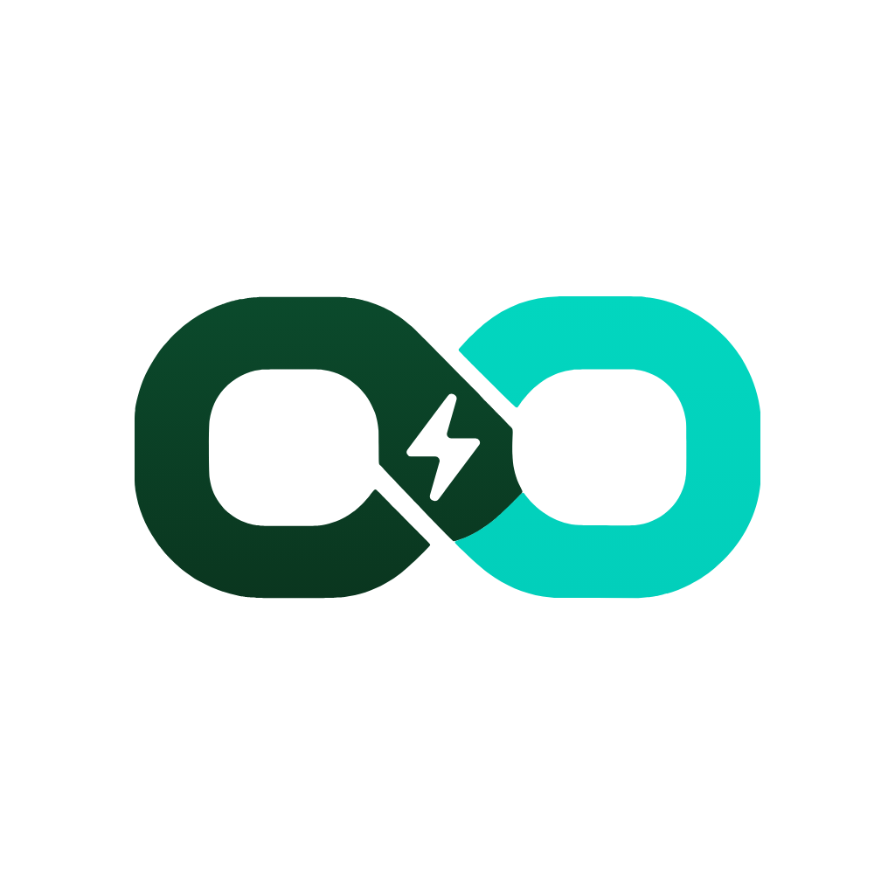

Ello On
Eletropostos, seu BYD e viagens sem medo da bateria
O Ello On reúne mais de 11 mil eletropostos num só mapa, mostra a bateria, a autonomia e o consumo do seu BYD (com a sua conta BYD) e planeja viagens calculando onde parar para recarregar, por quanto tempo e com quanto você chega.
Suporte
Dúvidas, sugestões ou um eletroposto com informação errada? Escreva para contato@elloon.com.br. Respondemos em até 2 dias úteis.
Perguntas frequentes
- Preciso ter um BYD? Não. O mapa e o planejador funcionam com qualquer elétrico: escolha o modelo e informe a carga.
- Minha senha da BYD fica guardada? Não. Ela vai direto do seu celular para a BYD só no momento do login.
- Como apago meus dados? No app: Meu carro → ⓘ → Apagar meus dados. Ou apague o app.
Política de privacidade · A Ello On não é afiliada à BYD. BYD é marca registrada da BYD Company Limited.